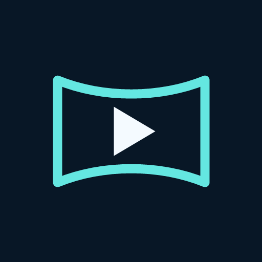

3D & immersive video
Full and half SBS, over-under, VR180, VR360 and equidistant fisheye. Choose the format and swap eyes when needed.
YOUR VIDEOS. YOUR VIEW.

Play your own 2D movies, side-by-side 3D and VR180/360 videos on Meta Quest. Move and tilt the picture to suit you. Compatible alpha-mask passthrough is included in the same $4.99 purchase.
One-time purchase · No ads · No subscription · Bring your own videos
Quest 2, Quest Pro, Quest 3 and Quest 3S · Local pricing may vary
Vistalyra is available on Meta Quest for $4.99. One purchase includes the published playback features, including compatible alpha-mask passthrough. No ads, subscription or app account.
View Vistalyra on Meta Quest · Buy the sideload edition on itch.io
The itch.io edition requires Developer Mode and APK sideloading. Store purchases are separate; an itch.io purchase does not grant a Meta store licence.
Full and half SBS, over-under, VR180, VR360 and equidistant fisheye. Choose the format and swap eyes when needed.
Compatible tagged videos with a packed matte can remove the background. Included without a separate unlock or timed playback limit.
Local files, favourites, resume and bookmarks. Select audio and subtitle tracks or add SRT/WebVTT subtitles.
Flat or curved viewing, move and tilt the picture, seek and zoom, adjust playback speed and set a sleep timer.
The cinematic opening leads into real Quest theater and lounge footage, with the sound of the playing movie. Room footage shows the 1.0.1 update preview; these additions are not yet available in the store. Sample movies are not included.
Full headset demo · Original launch trailer · Get Vistalyra on Meta Quest
Real Quest theater and lounge recording, with audio matched to the playing film. This clip shows the 1.0.1 update preview; the store currently serves 1.0.0 while the update is in review. Sample movies are not included.
The original launch film, preserved here alongside the real app demo. It includes promotional compositions and its original October 8 launch card. For actual app behavior, watch the headset recordings above.
Common containers include MP4, MKV, MOV, WebM and MPEG transport streams. A file extension alone does not establish that its video/audio codec, resolution and bitrate will play on every headset. Protected streaming services are not supported.
The published Meta Quest playback features are included in one purchase, including compatible alpha-mask passthrough. No subscription, ads, app account or separate feature unlock. Regional prices may differ.
Bring your own video files or supported direct media links. Movies are not bundled. Netflix and other DRM-protected streaming services are not supported.
These are containers, not codec guarantees. Playback depends on the file’s video/audio codec, resolution and bitrate and your headset. Contact us if you have a specific compatibility question.
The real headset trailers show the 1.0.1 update preview. The store currently serves 1.0.0 while the update is under review. Physical rooms and their interactive props are not yet available to store buyers.
The published version supports the viewing modes listed above. Disc images, MVC, MV-HEVC, proprietary lens calibration and SMB/DLNA browsing are not supported by the current store release.
Email raheelswati1@gmail.com with your headset, app version and a description. Honest feedback, including problems, helps us improve playback.
Contact raheelswati1@gmail.com. Include your headset model, app version, selected projection and stereo mode, and a description of the problem. Please do not send private videos or sensitive personal information.
Compatible tagged SBS fisheye-alpha files use their embedded matte automatically. Green and blue detection is conservative and runs locally. For other compatible backgrounds, choose the green, blue, black or gray key in passthrough settings and adjust its threshold. Ordinary footage without an embedded matte or suitable background cannot reliably become a cutout.
If startup remains on the system loading dots, close and reopen Vistalyra. If the headset or other apps are also slow, restart the headset. For incorrect depth, check projection, stereo packing and eye order. Codec support depends on the headset and file.
This release does not support DRM services, disc images, MVC, MV-HEVC, proprietary lens calibration or SMB/DLNA browsing. Videos are not bundled.
This page describes the Meta Quest store edition. For separate Galaxy XR testing and access, visit the Android XR beta page.
The Android XR edition is currently in private testing, not a public release. Open your local video with Open video. Use Watch, Library and Settings to switch between playback, folder browsing and viewing adjustments. Projection and Stereo are separate menus. Adjust screen size, distance, position, view direction and tilt in Settings; move the control panel using its system handle.
During playback, idle controls minimise after 15 seconds. Menus and Settings remain open while in use. Use Choose folder in Library to grant access to a media folder. Subtitle files can be opened from Settings. This edition does not require an account and does not include the Meta Platform SDK or an SMB/DLNA browser. Supported codecs and resolution depend on the headset. Real-headset comfort and high-resolution performance testing are pending.